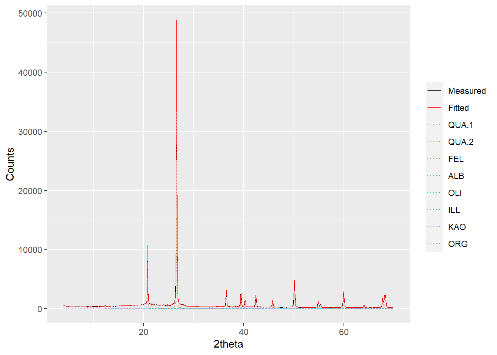

The powdR package
The powdR package

Overview
powdR is an open source implementation of the full pattern summation approach to quantitative mineralogy from X-ray powder diffraction data (Chipera and Bish 2002, 2013; Eberl 2003), written in the R programming language. It seeks to make quantitative phase analysis from XRPD data a faster and more user-friendly procedure.
This short tutorial explains the installation and basic use of powdR, which requires a prior installation of R. A more detailed tutorial of the package is provided in the pacakge Vignette, and video tutorials of the powdR web application can be found on the powdR YouTube channel.
Installation
The stable version of powdR is on CRAN:
install.packages("powdR")Alternatively, the development version can be downloaded from GitHub
#Install devtools if you don't already have it on your machine
install.packages("devtools")
devtools::install_github('benmbutler/powdR')Basic usage
library(powdR)
#> powdR: Full Pattern Summation of X-Ray Powder Diffraction Data
#Load some soils to quantify
data(soils)
#Load a powdRlib reference library of pure patterns
data(minerals)
#Quantify a sample
q <- fps(lib = minerals,
smpl = soils$sandstone,
refs = minerals$phases$phase_id,
std = "QUA.1")
#>
#> -Aligning sample to the internal standard
#> -Interpolating library to same 2theta scale as aligned sample
#> -Optimising...
#> -Removing negative coefficients and reoptimising...
#> -Computing phase concentrations
#> -Internal standard concentration unknown. Assuming phases sum to 100 %
#> ***Full pattern summation complete***
#Inspect the phase concentrations (summarised by name)
q$phases_grouped
#> phase_name phase_percent
#> 1 Quartz 53.6918
#> 2 K-feldspar 1.3184
#> 3 Plagioclase 1.1637
#> 4 Illite 1.3515
#> 5 Kaolinite 1.3697
#> 6 Organic-Matter 41.1049
#Inspect the quantification
plot(q, wavelength = "Cu")
Alternatively, plot(q, wavelength = "Cu", interactive = TRUE) provides an interactive plot for better inspection of the fit.
The powdR Shiny app
To run powdR via the Shiny web applicationp, use run_powdR(). This loads the application in your default web browser. The application has eight tabs:
- Reference Library Builder: Allows you to create and export a
powdRlibreference library from two .csv files: one for the XRPD measurements, and the other for the ID, name and reference intensity ratio of each pattern. - Reference Library Viewer: Facilitates quick inspection of the phases within a
powdRlibreference library. - Reference Library Editor: Allows the user to easily subset a
powdRlibreference library . - Full Pattern Summation: A user friendly interface for iterative full pattern summation of single samples.
- Automated Full Pattern Summation: A user friendly interface for automated full pattern summation of single samples.
- Results viewer: Allows for quick inspection of results derived from full pattern summation.
- Results editor: Allows for results from previously saved
powdRfpsandpowdRafpsobjects to be edited via addition or removal of reference patterns to the fitting process. - Help Provides a series of video tutorials (via YouTube) detailing the use of the
powdRShiny application.